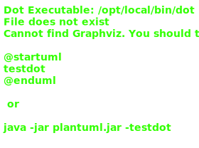

Class GroupComponent<E>
Type Parameters
-
E
Hierarchy-Diagram
{kind=link}
Legend
 class
class
 public property
public property
 private property
private property
 public method
public method
 private method
private method
Hierarchy
- GroupComponent
Implements
- OnInit
Index
Constructors
Properties
Methods
Constructors
constructor
- new
Group Component<E>(nodes: NodeService<E>): GroupComponent<E> -
Type Parameters
-
E
Parameters
-
nodes: NodeService<E>
Returns GroupComponent<E>
-
Properties
action
actions
add
all
date
date
date
date
dropdown
email
email
enable
event
event
events
group
is
is
item
list
node
node
Private Readonly nodes
number
popup
prev
remove
searchable
selected
show
Optional template
Type declaration
-
[key: string]: TemplateRef<RecordOfAnyType>
text
trigger
types
Methods
add
add
- add
Value(element: NodeWithInput<E>, input: WorkflowPrompt, value: AllowedValues | AllowedValuesMap, select??: boolean): void -
It takes in a node, an input, a value, and a boolean, and then it changes the state of the node based on the input and value
Parameters
-
element: NodeWithInput<E>
NodeWithInput
- The element that is being changed. -
input: WorkflowPrompt
WorkflowPrompt - this is the input that was changed
-
value: AllowedValues | AllowedValuesMap
AllowedValues | AllowedValuesMap,
-
Optionalselect: boolean = falseboolean - This is a flag that tells the function whether the input is a select input or not.
Returns void
-
append
- append
Email Body(item: Select, emailInput: EmailInput): void -
If the focusKey is subject, append the value of the item to the subject. If the focusKey is body, append the value of the item to the body
Parameters
-
item: Select
Select - this is the item that was selected from the dropdown
-
emailInput: EmailInput
EmailInput - this is the object that contains the email input values.
Returns void
-
create
- create
Callback(element: NodeWithInput<E>, input: WorkflowPrompt, popper: NgxPopperjsContentComponent): ((value?: AllowedValues) => void) -
It takes in an element, an input, and a popper, and returns a function that takes in a value, and if that value is defined, it adds the value to the element, and hides the popper
Returns
A function that takes a value and returns a function that takes a value and emits an event
Parameters
-
element: NodeWithInput<E>
NodeWithInput
-
input: WorkflowPrompt
WorkflowPrompt - this is the input object that was clicked on
-
popper: NgxPopperjsContentComponent
NgxPopperjsContentComponent
Returns ((value?: AllowedValues) => void)
-
- (value?: AllowedValues): void
-
Parameters
-
Optionalvalue: AllowedValues
Returns void
-
-
Private handle
- handle
Subsequent Inputs(element: NodeWithInput<E>, input: WorkflowPrompt): void -
It removes all the inputs that come after the current input
Parameters
-
element: NodeWithInput<E>
NodeWithInput
-
input: WorkflowPrompt
WorkflowPrompt - this is the input that was just changed
Returns void
-
hide
ng
ng
on
- on
Node Add(node: WorkflowNode<E>, groupType: string, groupId: string, id?: string): void -
onNodeAddis a function that takes in a node, a group type, a group id, and an id, and then emits an event with a node and a new nodeParameters
-
node: WorkflowNode<E>
The node that was added.
-
groupType: string
string - The type of group that the node is being added to.
-
groupId: string
The id of the group that the node is being added to.
-
Optionalid: stringThe id of the node.
Returns void
-
on
on
- on
Poper Click(event: MouseEvent, popper: NgxPopperjsContentComponent): void -
It hides the previous popper and shows the current popper.
Parameters
-
event: MouseEvent
MouseEvent - The event that triggered the popper to show.
-
popper: NgxPopperjsContentComponent
NgxPopperjsContentComponent - this is the popper component that you want to show/hide.
Returns void
-
open
- open
Popup(type: NodeTypes): void -
If the type is an action, set the node list to the actions, otherwise if the type is an event, set the node list to the trigger events if there is only one event group and no children, otherwise set the node list to the events
Parameters
-
type: NodeTypes
NodeTypes
Returns void
-
remove
set
- set
Focus Key(emailInput: EmailInput, key: string): void -
Set the focus key of the email input to the key.
Parameters
-
emailInput: EmailInput
EmailInput - This is the email input object that you created in the previous step.
-
key: string
The key of the input.
Returns void
-
set
- set
Input(input: WorkflowPrompt, nodeWithInput: NodeWithInput<E>): void -
If the input is a value input, then set the value of the input to the value of the node
Parameters
-
input: WorkflowPrompt
WorkflowPrompt - The input that was passed in from the workflow.
-
nodeWithInput: NodeWithInput<E>
The node that has the input.
Returns void
-
The addClick() function emits the add event, which is a boolean value of true